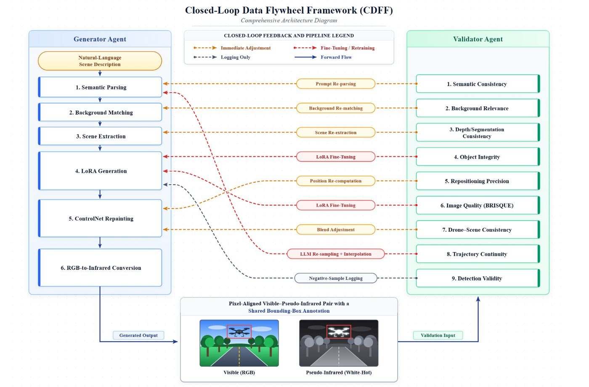
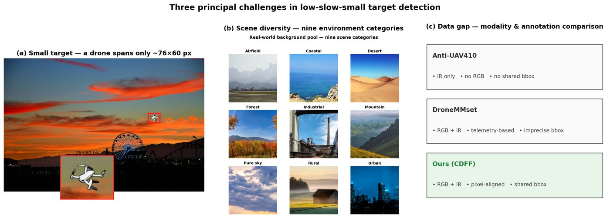
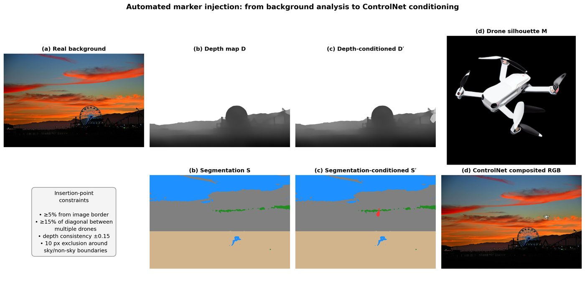
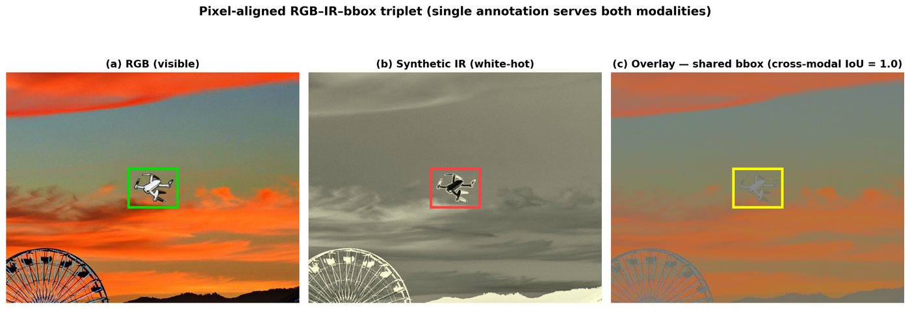
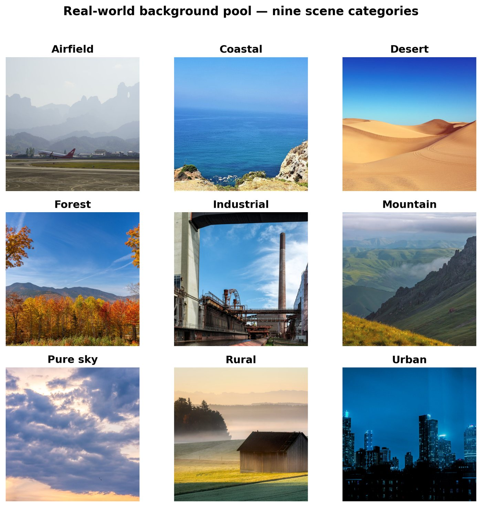
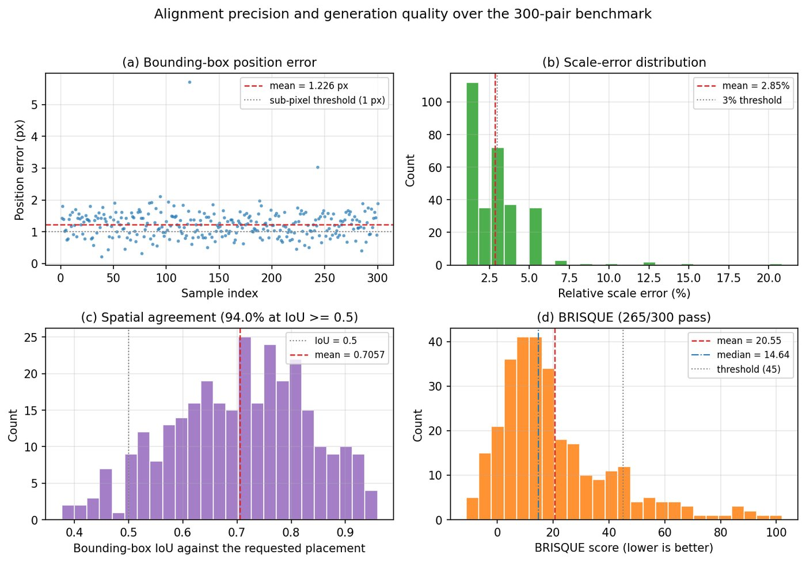
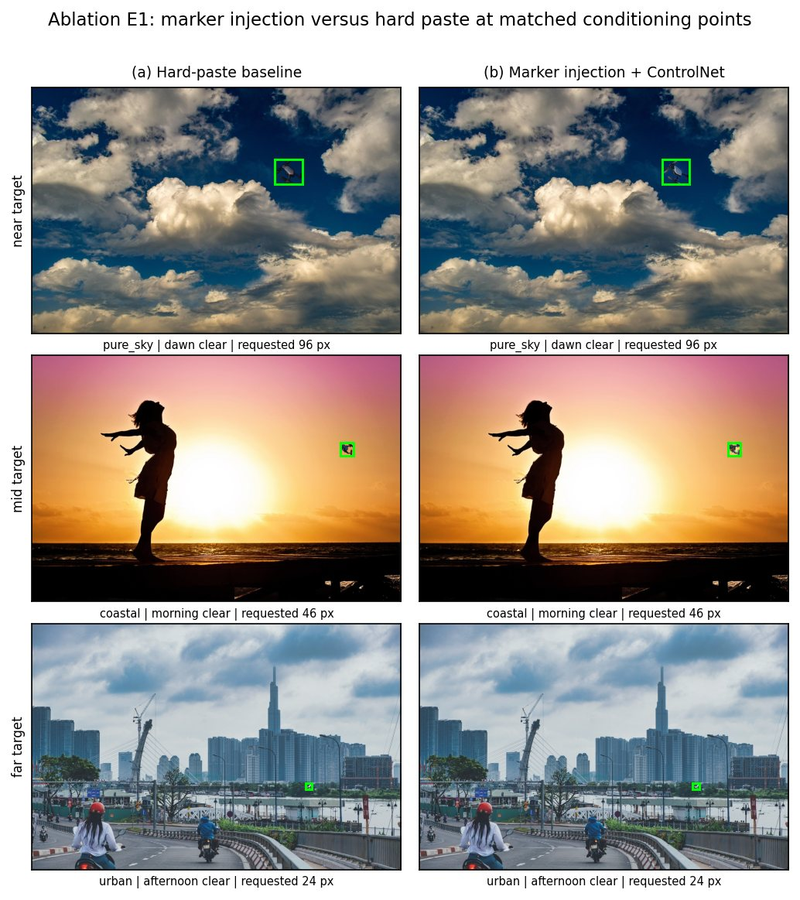

无法无人值守地控制几何
布局条件模型需要逐样本手工准备条件图；提示词条件给不出可信的坐标与尺度。生成器不知道目标该落在哪、该多大，标注框也就无从谈起。
Neurocomputing · Manuscript under review
面向低慢小（LSS）空中目标的合成数据生成框架。双 Agent 对抗 + 闭环反馈：每个样本的目标位置、尺度与标注框在渲染之前就已确定，渲染之后可被独立验证。

为什么需要它
低慢小目标在 200–500 m 距离上只占 15×15 到 30×30 像素，雷达截面小、声学与热特征弱，真实数据极难采集。用扩散模型批量生成训练数据看似直接，实际卡在两件事上。
布局条件模型需要逐样本手工准备条件图；提示词条件给不出可信的坐标与尺度。生成器不知道目标该落在哪、该多大，标注框也就无从谈起。
BRISQUE、ImageReward 一类感知指标在成图上计算，与检测器需要的几何一致性解耦：一张图可以很逼真，却违反透视或尺度。
把一张普通背景照片转成几何已声明、且事后可验证的样本。几何来自背景图本身——单目相对深度与规则化可供性图——不需要人工布局。

目标的位置、尺度与标注框在渲染之前由声明距离与解析式给出，渲染后只是去核对它有没有兑现。
插入位置由单目相对深度与可供性图自动推导，批量生成不需要逐张准备条件图。
验证端输出结构化失败码，路由回对应组件，累计到阈值后触发增量微调与权重替换。
伪红外由同一张成图逐像素转换而来，因此两种模态的标注框天然共享同一坐标。
框架不绑定某一类目标：换成任意 SD 1.5 架构的 kohya 格式 LoRA，改一行路径即可。
预处理、验证链与全部复现脚本不依赖 GPU；只有生成与训练需要显卡。
架构
六个生成模块把背景照片变成成对样本，九个验证模块对它逐级审查；审查不通过的样本给出可路由的失败码，而不是一个笼统的分数。
自然语言任务描述 → 结构化 schema，给出目标类型、距离档位与场景约束。
按场景类、时段、天气四层降级匹配，从九类背景池中取图并记录匹配级别。
单目相对深度 + 规则化可供性图，给出可插入的深度平面与候选落位。
把几何声明（中心点与尺寸）写成视觉标记注入背景，作为后续重绘的锚。
目标 LoRA 只合并进 UNet，在标记区域合成目标；随后 ControlNet 条件重绘完成融合。
按同一几何逐像素转换为白热伪红外，得到共享坐标的 RGB–IR 对。


S6_BLUR · S7_SCALE_MISMATCH · S8_POSITION_JUMP …
按失败码把样本送回导致它的那个模块
失败样本按码累积，达阈值触发
只微调相关组件，替换权重后继续生成
数据集
基准为 300 对可见光–伪红外样本，覆盖九类场景、五个时段、五类天气；300 组条件互不重复，条件熵在三个维度上分别为 3.305 / 3.296 / 2.497 bits。
| 项目 | 值 | 说明 |
|---|---|---|
| 评测样本 | 302 对 | 主基准 300 对 + 重绘臂与直贴臂共用的 1 条难例 ×2 |
| 背景池 | 37,852 张 | 实拍背景，九类场景，仓库不含，需自行准备 |
| 场景类 | 9 | airfield · coastal · desert · forest · industrial · mountain · pure_sky · rural · urban |
| 时段 / 天气 | 5 / 5 | 时段 dawn→night；天气 clear / overcast / rainy / foggy / dusty / backlight |
| 模态 | RGB + 伪红外 | 像素对齐，标注框共享同一坐标 |
| 画布 | 1280 × 853 | 主基准画布中位分辨率，中位对角 1538.18 px |
| 目标像素尺度 | 12 – 96 px | 按声明距离解析式给出（60 m → 60 px） |
| 标注 | bbox + 元数据 | JSON 记录条件、真实框、深度与失败码 |

samples/
├── b000_rgb.png # 可见光成图
├── b000_ir.png # 伪红外（同坐标）
├── b000_meta.json # 条件 + gt_bbox + 深度 + 验证记录
└── _batch_results.json # 批次汇总结果
300 对主基准上的对齐与质量指标。位置误差已接近半像素量化界——这不是精度上限的证据，而是渲染分辨率决定的下限。
Epos
1.226 ± 0.448 px
质心位置误差 · 亚像素率 29.3%
Escale
0.028 ± 0.021
相对尺度误差 · ≤3% 占 61.3%
IoU
0.706 ± 0.126
包围盒 IoU · ≥0.5 占 94.0%
BRISQUE
20.55
无参考质量 · 通过率 88.3%

| 指标 | 值 | 范围 / 通过率 |
|---|---|---|
| Epos | 1.226 ± 0.448 px | [0.228, 5.708] px |
| Escale | 0.028 ± 0.021 | [0.010, 0.208] |
| IoU | 0.706 ± 0.126 | [0.377, 0.959] |
| IoU ≥ 0.5 | 94.0% | 282 / 300 |
| 亚像素率（Epos < 1 px） | 29.3% | 88 / 300 |
| BRISQUE | 20.55 | 中位 14.64，σ 20.66 |
| 质量通过率（≤ 45） | 88.3% | 265 / 300 |
| 超出半像素量化界 | 98.0% | 294 / 300，位置精度受渲染分辨率约束 |
| 均方位移 / 中位画布对角 | 0.080% | 最差单样本 0.253% |

150 配对 ×2 臂。几何与无参考质量两臂不可区分——位置误差 1.241 vs 1.241 px、IoU 0.706 vs 0.706、BRISQUE 20.67 vs 20.64。协调性指标 LCR 上注入臂显著更低（1.338 vs 1.655，Wilcoxon p = 4.9e-05），RLJ 差异不显著（p = 0.952）。
结论是 null result，不是「注入更差」。早期版本里的 trade-off 论述已废弃。
| 指标 | 注入 | 硬贴 | p |
|---|---|---|---|
| LCR ↓ | 1.338 | 1.655 | 4.9e-05 |
| RLJ ↓ | 0.242 | 0.247 | 0.952 |
实验刻画的是生成过程——目标是否落在要求的位置与尺度、缺陷样本是否被拦下——而不是产品效用。没有检测器在 CDFF 输出上训练并在真实影像上评估，因此本工作不支持“检测精度提升”的主张。V9 使用 COCO 预训练的 YOLOv8x，其类别表不含无人机，只作下游显著性代理。
验证链
在 302 张成图上，单看 BRISQUE 阈值会接受 267 张（88.4%），而 V6→V7→V9 链接受 161 张（53.3%），两者一致 158 张。Jaccard 0.585——差集就是「画得好看但几何站不住」的那批样本。
| 阶段 | 作用 | 检查数 | 失败码 |
|---|---|---|---|
| V1 | JSON 结构 | 6 | A1_* |
| V2 | Transformer 解析 | 6 | A2_* |
| V3 | ControlNet 条件 | 4 | A3_* |
| V4 | LoRA 采样 | 3 | A4_* |
| V5 | 红外通道 | 3 | A5_* |
| V6 | 感知质量 | 3 | S6_* |
| V7 | 一致性（尺寸 / 光照 / IR 框 / 跨模态） | 4 | S7_* |
| V8 | 轨迹物理 | 4 | S8_* |
| V9 | 检测代理 | 3 | S9_* |
V7 的每个维度只有 PASS / FAIL / SKIP 三种状态，而 SKIP 不是通过：没有可用输入的维度记为 SKIP 并排除在判定之外；一个维度都没评估的样本判 SKIP 而不是接受。
RGB 与伪红外的框 IoU 恒等于 1.000，因为两者按构造来自同一坐标。它验证的是管线自洽，不是一项独立测量。
三态约定由 validator/v7_consistency/test_s7_tristate.py 钉死，不需要任何模型权重即可运行。
获取
代码以 MIT 发布；权重、底模与图片各自另有许可，不随仓库分发。若需要评测集或已训练的适配器，请通过仓库 Issue 联系作者。
克隆仓库、装依赖、把资产指到本地目录，即可开始生成。几十张背景图就能跑通全流程。
git clone https://github.com/TAAS2024/low-slow-small-targets-dataset
cd low-slow-small-targets-dataset
pip install -r requirements.txt
python notebooks/smoke_run.py评测与消融脚本都在 experiments/ 下，只读 out_* 的 JSON；重画图表是秒级的。
cd experiments/bcd
python3 make_paper_figs.py
python3 audit_tables_v20.py背景池来自第三方实拍图库，不随项目再分发；目标 LoRA 与合并权重继承底模许可。按需申请，请说明机构与用途。
源码是 MIT，但整个项目不是 MIT。下表说明每个组成部分的真实条款。
| 组成 | 许可 | 随仓库分发 |
|---|---|---|
| 本项目原创源码 | MIT | 是 |
| Stable Diffusion v1.5 底模 | CreativeML OpenRAIL-M | 否 |
| ControlNet depth / seg | OpenRAIL | 否 |
| LoRA 适配器与合并权重 | CreativeML OpenRAIL-M（继承） | 否 |
| MiDaS · CLIP | MIT | 否 |
| Ultralytics YOLOv8（可选，V9） | AGPL-3.0 | 否，默认不安装 |
| 背景池 / 无人机原图 / 评测集图片 | 各自原始来源条款 | 否 |
LoRA 适配器是底模的衍生作品，因此它本身以及由它合并出的任何 checkpoint 都继续受 CreativeML OpenRAIL-M 约束，包括其 Attachment A 的使用限制；分发时必须一并附上该许可。逐项条款见仓库中的 THIRD_PARTY_LICENSES.md 与 NOTICE。
引用
@article{li_cdff,
title = {A Spatially Controlled Closed-Loop Framework for Synthetic
Low-Slow-Small Target Dataset Generation},
author = {Li, Qingming and Zhang, Yanxin and Zhu, Zhongpan and He, Bin},
note = {Manuscript under review, Neurocomputing}
}@misc{cdff2026,
title = {CDFF: Closed-Loop Dataset Fabrication Framework for
Low-Slow-Small Aerial Targets},
author = {Li, Qingming and Zhang, Yanxin and Zhu, Zhongpan and He, Bin},
year = {2026},
howpublished = {\url{https://github.com/TAAS2024/low-slow-small-targets-dataset}},
note = {Source code licensed MIT; model weights inherit
CreativeML OpenRAIL-M}
}